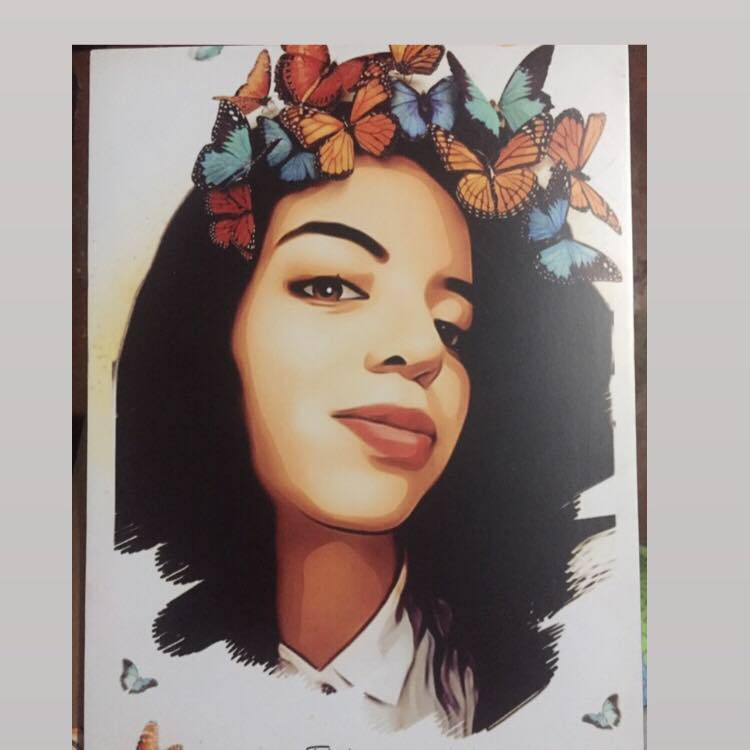
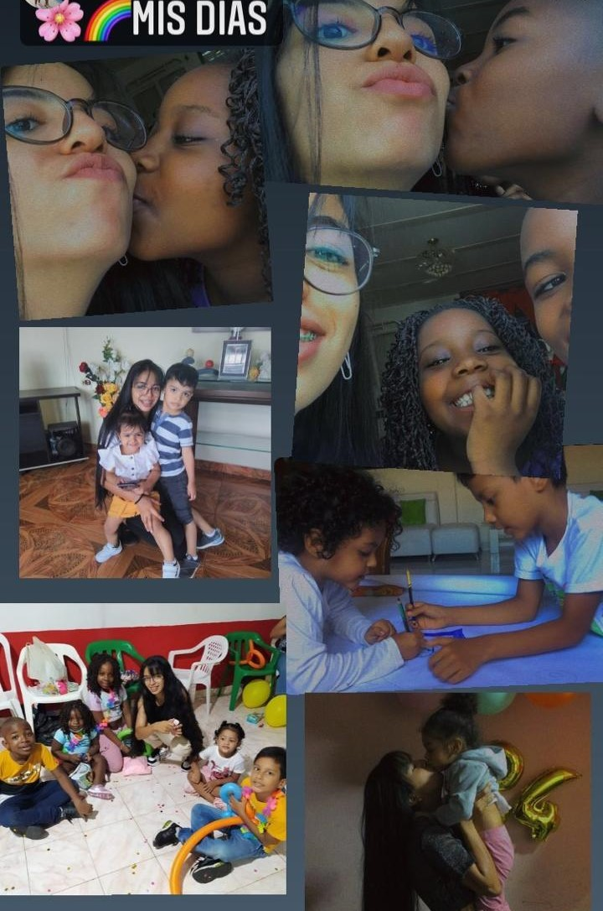
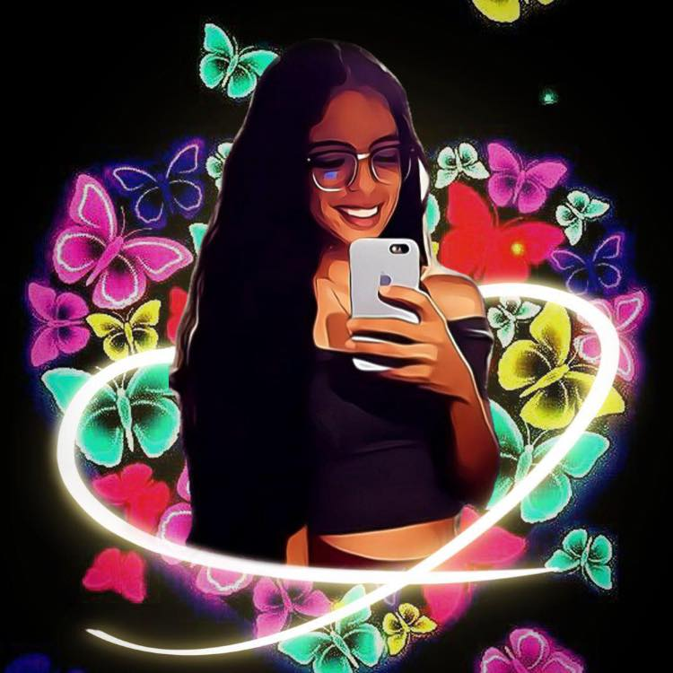

Heroes examples
ANGIE MELISA MONTES
TENGO 24 AÑOS, SOY ESTUDIANTES DE TECNOLOGIA EN SISTEMAS DE INFORMACIÒN, ACTUALMENTE CURSO 7 SEMESTRE EN LA UNIVERSIDAD DE VALLE SEDE TULUÀ..
Estar preparado es importante, saber esperar lo es aún más, pero aprovechar el momento adecuado es la clave de la vida.


EN EL MOMENTO
SOY MONITORA POR HORA DE NIÑOS DE 4 A 8 AÑOS DE EDAD, LES DOY REFUERZOS Y AYUDO EN LA DUDAS QUE SE LE OCURRE; ES MI TRABAJO ACTUALMENTE,ME GUSTA MUCHO LO QUE HAGO.

ME GUSTA
ME GUSTA ESCUCHAR MUSICA (mis generos favoritos, en realidad no tengo escucho de todo un poquito no miro genero si no letra). ME ENCANTA VER SERIES NO TENGO UN TEMA EN ESPECIAL, TAMBIEN ME GUSTA MUCHO HACER EJERCICIO.